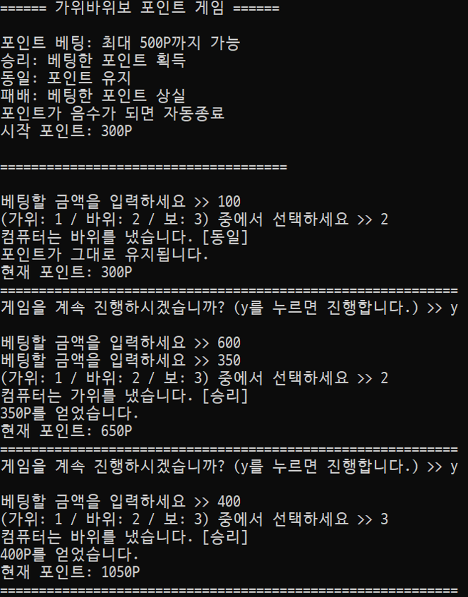
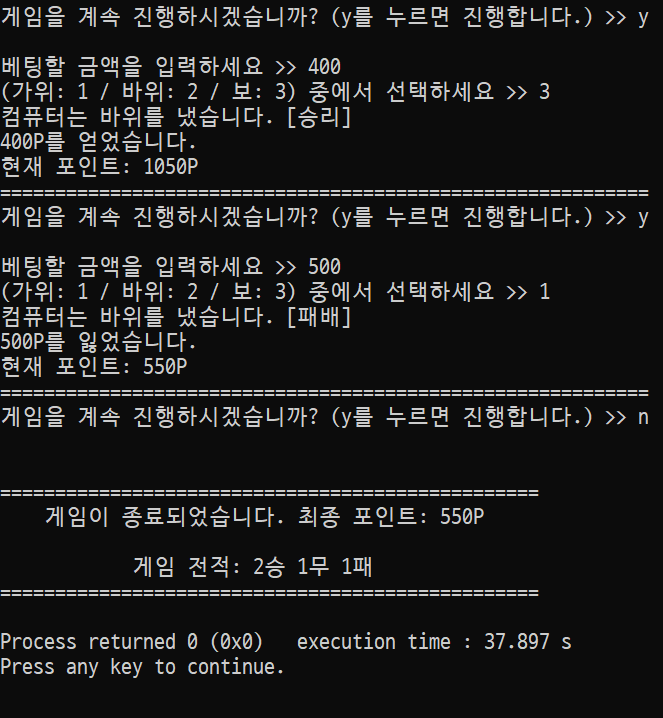

(1) 설명
- 이 프로그램은 컴퓨터와의 가위바위보를 통해 포인트를 얻는 게임이다.
처음 시작 시 보유한 포인트는 300포인트이고, 한번에 최대 500포인트까지 베팅이 가능하다.
승리 시 베팅한 포인트를 얻게되며 동일할 경우 아무 일도 일어나지 않고, 패배 시 베팅한 포인트를 잃는다. 포인트가 음수가 되면 자동으로 게임이 종료된다. - 먼저 포인트를 베팅한다. 이때 베팅한 포인트가 500보다 크거나, 내가 가진 포인트보다 크면 다시 입력하도록 반복한다.
- 가위(1), 바위(2), 보(3) 중에서 무엇을 낼지 정한다.
- 컴퓨터가 무엇을 냈는지 출력하고, 승리/패배 여부를 알려준다.
- 승리/패배 여부에 따라 포인트가 갱신된다.
- y를 누르면 게임을 계속하고, 그 이외의 것을 입력하면 게임을 종료한다.
- 게임이 종료되면 전적과 남은 포인트를 보여준다.
(2) 실행결과
